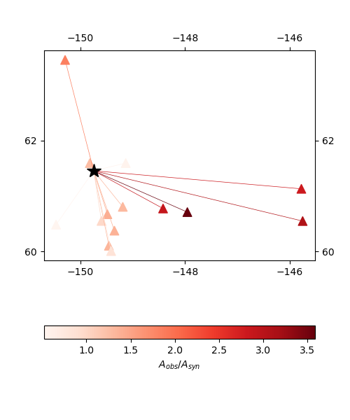

Plotting trace attributes¶
To calculate time shifts, amplitude ratios and other trace attributes, the misfit functions’s collect_attributes method can be invoked using the same arguments as an ordinary misfit function evaluation:
attrs = misfit.collect_attributes(data, greens, source)
Plotting time shifts¶
Following Zhao1994, moment tensor inversions commonly use time shifts to mitigate velocity model inaccuracy. To understand such effects, it can be helpful to plot how time shifts vary geographically and by component.
To plot time shifts, the attrs data structure above can be passed directly to a plotting function:
from mtuq.graphics import plot_time_shifts
plot_time_shifts(dirname, attrs, stations, origin, components=['Z','R','T'])
As a result, an image like the following will be created for each component:
{kind=link}
Plotting amplitude ratios¶
Similarly, the attrs data structure can be used to plot amplitude ratios:
from mtuq.graphics import plot_amplitude_ratios
plot_amplitude_ratios(dirname, attrs, stations, origin, components=['Z','R','T'])
As a result, an image like the following will be created for each component:
{kind=link}
Plotting custom attributes¶
It is possible to add custom attributes to the data structure returned by collect_attributes.
To plot how a custom attribute varies, we can use the private function _plot_attrs:
from mtuq.graphics import _plot_attrs
_plot_attrs(dirname, stations, origin, attrs, 'custom_attr', components=['Z','R','T'])
(In fact, _plot_attr is used under the hood by plot_time_shifts, plot_amplitude_ratios, and plot_log_amplitude_ratios.)
Source code¶
The above figures can be reproduced by running DetailedAnalysis.py.